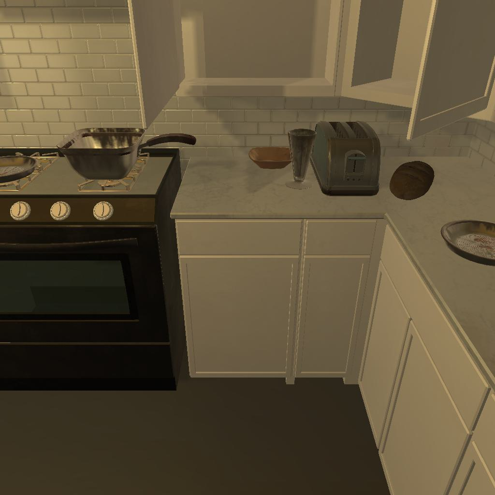

---------------------------------------------------------task: 10---------------------------------------------------------
--------------------------------------------------------------------------------------------------------------------------------------------------------------------
--------------------------------------------------------------------------------------------------------------------------------------------------------------------
Step:--------------------------------------------------------------------------14-------------------------------------------------------------------------------
----------------------------------------
VLM Prompt:
Image1:
Image2:
Image3:
**Instruction**
1. Analyze the provided images to identify all visible household objects and compare the difference between images (e.h. whether the object is opened or not and taken on hand or not), focusing on those relevant to the task description "clean some plate and put it in countertop."
2. Use the analysis of images and the task hint "The agent must find an object of the desired type, pick it up, go to a sink or a basin, clean the object with a sink or basin, and then find the correct location to place it and put it down there. The agent does not need to use soap bottle or faucet to clean the object, and the agent just needs to do action that is "clean the object with the sink or sink basin"." to answer the question: what is the most reasonable action in the choices for the task description "clean some plate and put it in countertop"?
3. Decide and write the answer using the template: The answer is: (i): , where i is the real number. If there is no desired object in images, search every place based on **Initial Observation** to find the object. And if no one is exactly correct, choose a similar answer.
**Initial Observation**
You are in the middle of a room. Looking quickly around you, you can see cabinet (1-20), toaster (1), microwave (1), garbagecan (1), countertop (1-2), drawer (1-4), stoveburner (1-4), sinkbasin (1), sink (1), fridge (1), diningtable (1), coffeemachine (1)
**Answer Choices**
(1): go to cabinet 2
(2): go to cabinet 3
(3): go to toaster 1
(4): go to cabinet 4
(5): go to cabinet 5
(6): go to microwave 1
(7): go to garbagecan 1
(8): go to countertop 1
(9): go to drawer 1
(10): go to cabinet 6
(11): go to cabinet 7
(12): go to drawer 2
(13): go to stoveburner 1
(14): go to stoveburner 2
(15): go to countertop 2
(16): go to cabinet 8
(17): go to cabinet 9
(18): go to cabinet 10
(19): go to drawer 3
(20): go to drawer 4
(21): go to stoveburner 3
(22): go to stoveburner 4
(23): go to cabinet 11
(24): go to cabinet 12
(25): go to cabinet 13
(26): go to cabinet 14
(27): go to sinkbasin 1
(28): go to sink 1
(29): go to cabinet 15
(30): go to fridge 1
(31): go to cabinet 16
(32): go to cabinet 17
(33): go to cabinet 18
(34): go to cabinet 19
(35): go to diningtable 1
(36): go to coffeemachine 1
(37): go to cabinet 20
(38): open cabinet 1
(39): close cabinet 1
(40): take nothing from cabinet 1
(41): examine cabinet 1
**Answer**
Let's think step by step by following the instructions.
----------------------------------------
----------------------------------------
Original Response:
Firstly, we analyze the provided images. Image 1 shows a kitchen environment with a countertop, stove burner, toaster, and some utensils like a pan and a glass. Image 2 and Image 3 are identical and do not show any visible household objects; it appears to be a zoomed-in view of a corner with no relevant objects for the task.
According to the task description "clean some plate and put it in countertop" and the task hint provided, the agent must find a plate, clean it, and put it on the countertop. Since no plate is visible in the images provided, the agent must search for a plate.
Based on the **Initial Observation**, the likely locations to find a plate would be in the cabinets or drawers. The agent does not need to use the toaster, microwave, garbage can, stove burner, sink basin, sink, fridge, dining table, or coffee machine to complete this specific task.
Considering the answer choices provided, the most reasonable action would be to look for a plate in the cabinets as they are the most common storage places for plates. Since cabinet 1 is not specified as an option, we can assume the agent is not currently near cabinet 1 or that it does not contain plates.
The answer is: (2): go to cabinet 3. This action is selected because it is the next sequential cabinet option, and it is reasonable to start searching for a plate there. If cabinet 3 does not contain a plate, the agent should continue searching in the other cabinets following the numerical order.
----------------------------------------
----------------------------------------
>>> Refine Original VLM Response and Get Pure Action: go to cabinet 3
----------------------------------------
-----------------------------------------------------------------
Running time: 16.050450563430786 seconds
Total Money: 5.316420000000005
-----------------------------------------------------------------
-----------------------------------------------------------------
Text Observation:You arrive at loc 2. The cabinet 3 is open. On the cabinet 3, you see nothing.
-----------------------------------------------------------------
UNSUCCEED